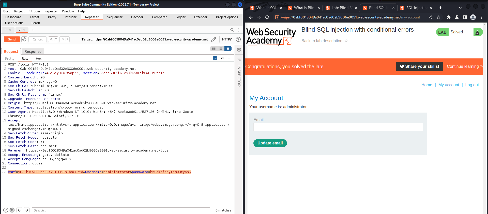
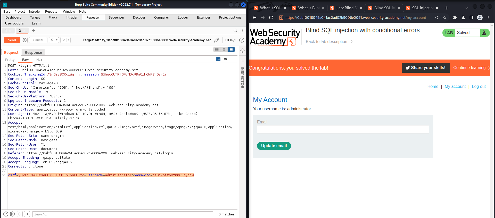
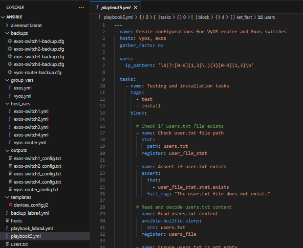
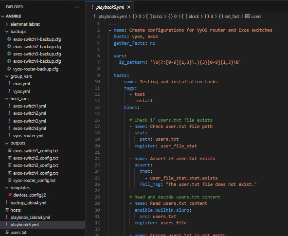

From 2023 onward
Jamk: Bachelor's Degree Programme in Information and Communications Technology

Jamk: Bachelor's Degree Programme in Information and Communications Technology
Xamk: Studies in cyber security
Studies in computer science at a univeristy in Sweden
Bachelor's degree in oral hygiene and other studies
Double degree: Matriculation examination and Vocational education in Music
At the ITOC service center, operations were strongly based on the ITILv3 framework, with a focus on incident management. Other important processes included problem management, change management, and service requests. I worked at ITOC as a Junior ICT specialist in both customer service and expert roles, serving network, server, and security clients. My tasks included supporting information systems and telecommunications, as well as remote management, configuration, and monitoring of network devices. I operated in troubleshooting situations for Telia Cygate and client environments, aiming to resolve issues in collaboration with customer experts.
The work at ITOS was diverse, as Telia Cygate has many customers. Communication primarily took place via phone, email, or ticketing systems in both Finnish and English. I had the opportunity to get acquainted with the network environments of various companies, for example, through network diagrams and customer-specific documentation. Customers used a wide range of services, but I primarily worked with LAN, WLAN, firewall, and server services. Through this work, I gained a better understanding of SNMP and ping-based monitoring, as the customers' sites had SmartWatcher servers that monitored devices using SNMP polling. I became familiar with the use of monitoring consoles, which were used to monitor things like ports, performance, network traffic latency, CPU, memory, disk space, and overall device health. The customers' and Telia Cygate’s environments included devices from various manufacturers, so I had the opportunity to configure different types of network devices from the command prompt and GUI interfaces. With incident management at the core, I did a lot of troubleshooting in my daily work. I mainly focused on issues in the data link layer, investigating fault causes on switches and access points, for example. From troubleshooting, I learned to better read device logs, analyze data from monitoring tools, and search for information more efficiently. I also gained experience with device installations, which were carried out over the phone with technicians. The most common tasks were device replacements when devices failed or installing and configuring new devices.
Junior ICT specialist role at ITOC was my first network-oriented job, where I gained valuable experience as ITOC served as a point of contact for many other units. Through ITOC, I got an understanding of other network-related areas. The job taught me especially how to work independently, as it required learning new things every day due to the vast number of technologies used, and perhaps most importantly, the courage to tackle unfamiliar problems. Strong customer service skills, a relaxed attitude, a sense of humor, and perseverance, also helped along the way. In the future, it would be interesting to deepen my expertise in access/edge networks, data centers, or backbone networks, as well as wireless technologies.
I worked as a Service Desk Agent and my job was to solve IT problems that Stora Enso's employees had at their workplace. The users contacted me either from Finland or Sweden by telephone or via email so I had to serve them in Finnish or Swedish as necessary. Their problems mainly considered Stora Enso's internal services, login information, licenses, hardware or network issues, VPN or software problems. These kinds of issues were not always easy to solve on telephone why I used different kinds of remote connectivity softwares. In addition I had to manage user accounts or other data and therefore I also used regularly systems like Active Directory.
The phone calls I received came randomly either from Finland or Sweden why I had to change language quite often during workdays. Additionally time to time we had meetings in English since we cooperated a lot with an another Global Service Desk. So I got a great opportunity to practise my language skills. I also learned a lot more about basic troubleshooting methods and different troubleshooting tools in Windows, practised to analyse probable causes to technical problems and also learned new technical tricks. Sometimes during troubleshooting, under pressure skills and collaboration skills were needed, especially if there was an urgent problem. If I encountered an unfamiliar problem or I did not understand what a user had ment I took remote session to their computer and asked to explain a bit more. This usually simplified to determine the problem and I also got help from colleagues or other team members via chat when needed. I achieved my goals, in other words, learned more efficiently serve users in Swedish, saw what it is like to work in a Service Desk, gained more self-confidence and familiarized myself with different tools, services and systems which I had not used before.
The job in Service Desk gave me a foretaste of IT branch and the broadness of the field. My interest in administrative tasks grew during this job and later on it would be great to work more for instance with Linux, servers and network devices. In the future one of my goals is to better understand cloud services and artificial intelligence since these are increasingly imporant technologies in our society and they affect our lives quite profound and even unpredictable ways. I believe that in modern workplaces especially entrepreneurial skills, curiosity to learn new things and good interpersonal skills are essential alongside with technical skills. To my mind, it is generally easier to learn the latter.
Studies in Jamk are divided to basic engineering studies (common competences) and advanced engineering studies. In the basic studies we focus on basic engineering skills such as mathematics, physics, languages, basics of information technology, software engineering and entrepreneurship. In the other hand, in advanced studies one can choose courses freely and concentrate on subjects that are personally interesting. The studies varies between theoretical and practical courses. We have lectures to study theory behind different kinds of technical subjects and more practical oriented courses where we implement our theoretical knowledge. Down below is listed courses I have done so far.
Besides this website, which is created accoring to HTML5 standards and done by using tips from the W3Schools website, I have programmed a hangman game and designed a network troubleshooting program for Windows 10 PC. In this section, I have gathered some photos of the programs and of some school projects. Click the pictures to get more information.


 

 

The trombone is not the most popular instrument in the world when we compare for instance the amount of recordings for the trombone and for the piano. The lack of recordings has made me eager to make recordings of my own. It's quite fun to make your own compositions or arrangements and record them on tape. It's also nice to use finished recordings in other projects. On recording sessons I like to use the following, simple setup: Audacity software, AKG D40 dynamic instrument microphone, JBL Tune750BT headphones and Focusrite Scarlett sound card. Down below is a mp3-file of one of my recordings for trombone sextet, the first movement of Palestrina's mass Missa Papae Marcelli:
G. P. da Palestrina: Missa Papae Marcelli - KyrieMaking music on spare time is one of the best things I know. One of the greatest things in trombone playing is ensemble playing, especially in a symphony orchestra, in a trombone quartet or in a big band. I mainly play classical music since I've grown up listening to that genre but I would like to learn more jazz or funk trombone techniques also later in life. Like many other trombonists, I prefer the tenor trombone as my first choise of instrument but occationally I like to play the bass trombone in big bands and the alto trombone in symphony orchestras aswell.
Thaiboxing, also known as Muay Thai or 'the art of eight limbs', is another important hobby for me. It helps me to forget my worries of everyday life and physically keeps me in shape. Thaiboxing is a very versatile sport where one commonly uses techniques like: boxing (a little bit like the western boxers do), different kinds of kicks (high, low, roundhouse kicks and so on), elbows, clinching, knees and sweeps. I warmly recommend to try out thaiboxing if you would like to improve your balance, health, muscles or just for having some fun. As an amateur, thaiboxing is very enjoyable especially when you have the same kind of mindset as your training partners. One can always find new challenges among the sport, like competing in competitions. Self-improvement never stops.